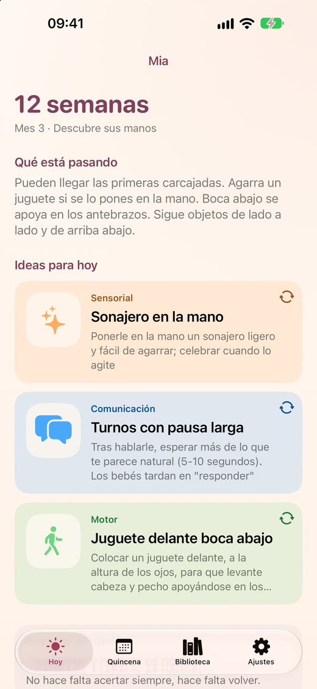
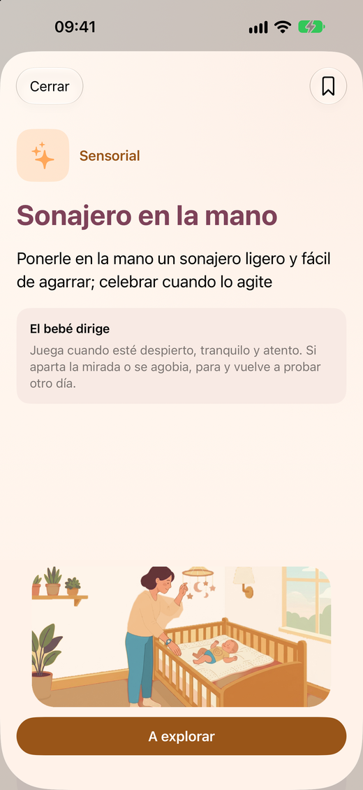
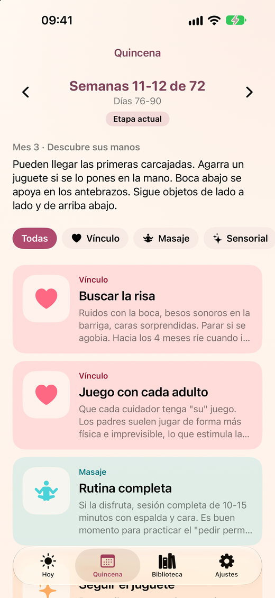

Baby & Bond
Juega y conecta con tu bebé
Baby & Bond ayuda a madres y padres a interactuar con su bebé, a crear vínculo y a que su bebé sea feliz. Cada día te propone ideas sencillas para jugar, mirar y estar juntos, adaptadas a la etapa exacta de tu bebé, de 0 a 18 meses.



Qué ofrece
- Cada día, tres ideas para jugar con tu bebé, de temas distintos: vínculo, masaje, sensorial, motor, comunicación y autonomía.
- 36 etapas de dos semanas, de 0 a 18 meses.
- Edad corregida para bebés prematuros y soporte para gemelos.
- Una guía para consultar: principios, señales del bebé, masaje infantil, seguridad y pantallas, y fuentes de información.
- Disponible en español, català, English y français.
- Sin cuentas, sin anuncios y sin recogida de datos.
Gratis para probar, un único pago para tenerlo todo
Gratis: una de las tres ideas de cada día, la etapa actual, la guía de seguridad y hasta 3 actividades guardadas. Con una compra única, sin suscripción, desbloqueas todas las etapas, las tres ideas diarias, toda la guía y las actividades guardadas sin límite.
Baby & Bond es una app de juego y vínculo. No es pediátrica ni evalúa el desarrollo: las dudas de salud o de desarrollo se consultan con tu pediatra.
¿Tienes dudas o sugerencias? Visita la página de soporte.